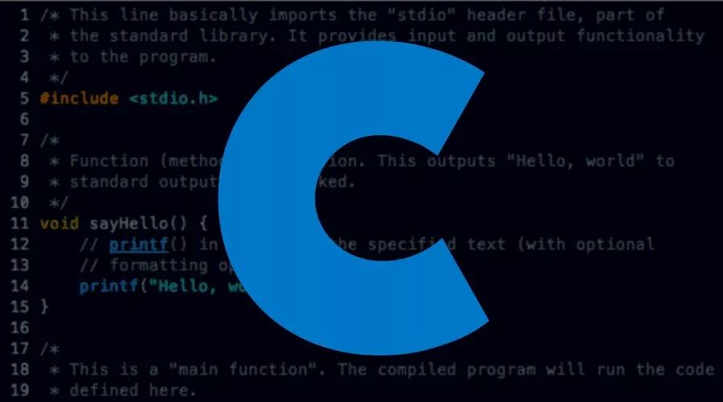
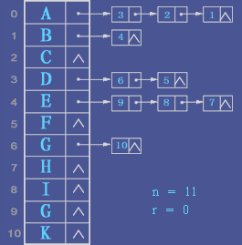
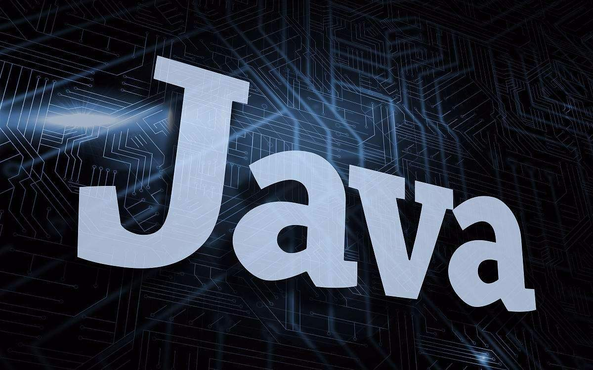
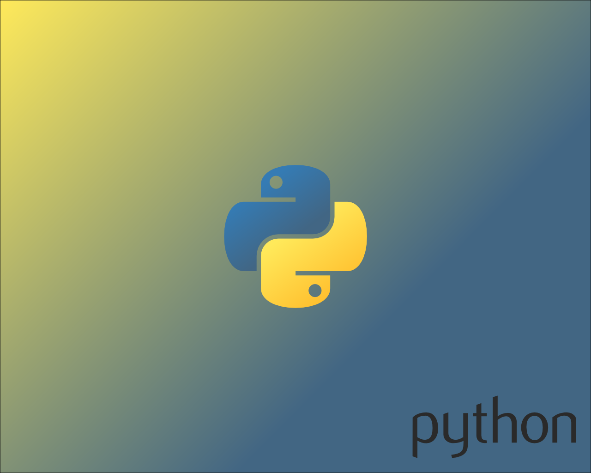

我的日常学习
戳带下划线的标题即可跳转到学习链接哦
C语言
C语言是一门面向过程的、抽象化的通用程序设计语言，广泛应用于底层开发。C语言能以简易的方式编译、处理低级存储器。C语言是仅产生少量的机器语言以及不需要任何运行环境支持便能运行的高效率程序设计语言。尽管C语言提供了许多低级处理的功能，但仍然保持着跨平台的特性，以一个标准规格写出的C语言程序可在包括类似嵌入式处理器以及超级计算机等作业平台的许多计算机平台上进行编译。
数据结构
数据结构是一门专业基础课，是学习其他软件开发与设计等方面课程的基础。主要内容包括:线性表、栈和队列、串、数组和广义表、树、图、查找算法和排序算法。数据结构研究数据的组织方式、存储结构（主要包括顺序存储结构与链表存储结构）及其相应的基本算法，内容丰富、学习量大，各部分内容中的方法和技术多，旨在让学生掌握计算机软件系统所必需的数据结构和算法的基本理论和基本方法。
JAVA
Java是一门面向对象编程语言，不仅吸收了C++语言的各种优点，还摒弃了C++里难以理解的多继承、指针等概念，因此Java语言具有功能强大和简单易用两个特征。Java语言作为静态面向对象编程语言的代表，极好地实现了面向对象理论，允许程序员以优雅的思维方式进行复杂的编程。
PYTHON
Python是一种跨平台的计算机程序设计语言。 是一个高层次的结合了解释性、编译性、互动性和面向对象的脚本语言。最初被设计用于编写自动化脚本(shell)，随着版本的不断更新和语言新功能的添加，越多被用于独立的、大型项目的开发。
前端
前端即网站前台部分，运行在PC端，移动端等浏览器上展现给用户浏览的网页。随着互联网技术的发展，HTML5，CSS3，前端框架的应用，跨平台响应式网页设计能够适应各种屏幕分辨率，完美的动效设计，给用户带来极高的用户体验。
大数据技术原理与应用
大数据（big data），IT行业术语，是指无法在一定时间范围内用常规软件工具进行捕捉、管理和处理的数据集合，是需要新处理模式才能具有更强的决策力、洞察发现力和流程优化能力的海量、高增长率和多样化的信息资产。
在维克托·迈尔-舍恩伯格及肯尼斯·库克耶编写的《大数据时代》中大数据指不用随机分析法（抽样调查）这样捷径，而采用所有数据进行分析处理。大数据的5V特点（IBM提出）：Volume（大量）、Velocity（高速）、Variety（多样）、Value（低价值密度）、Veracity（真实性）